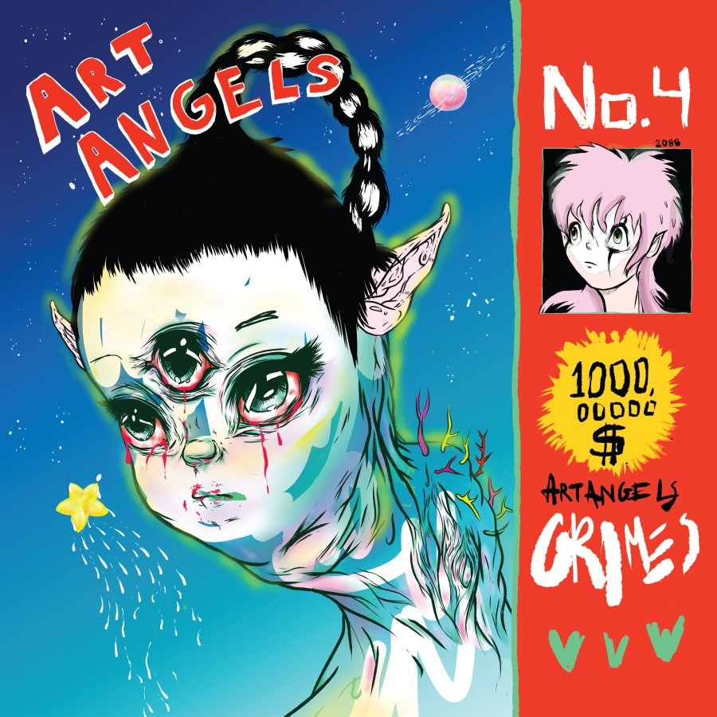
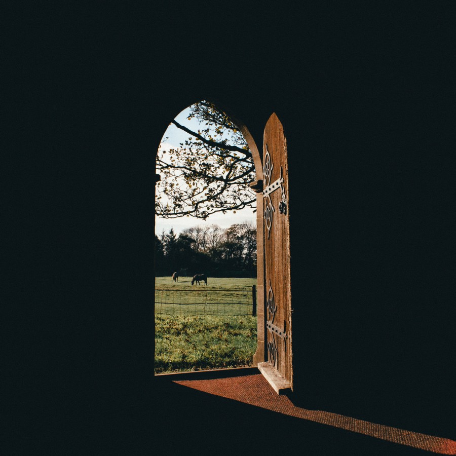
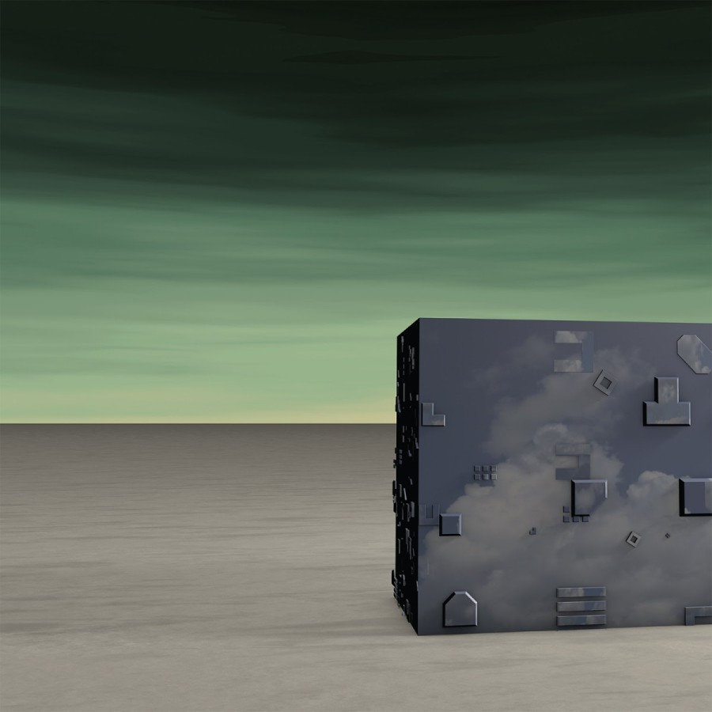
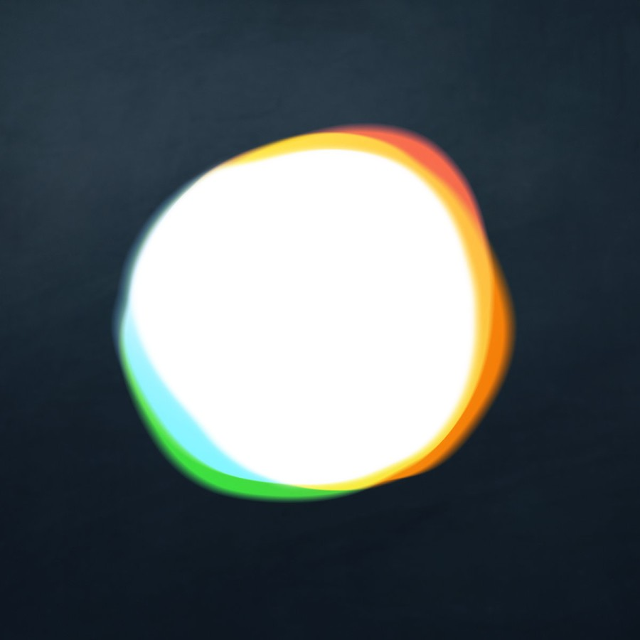
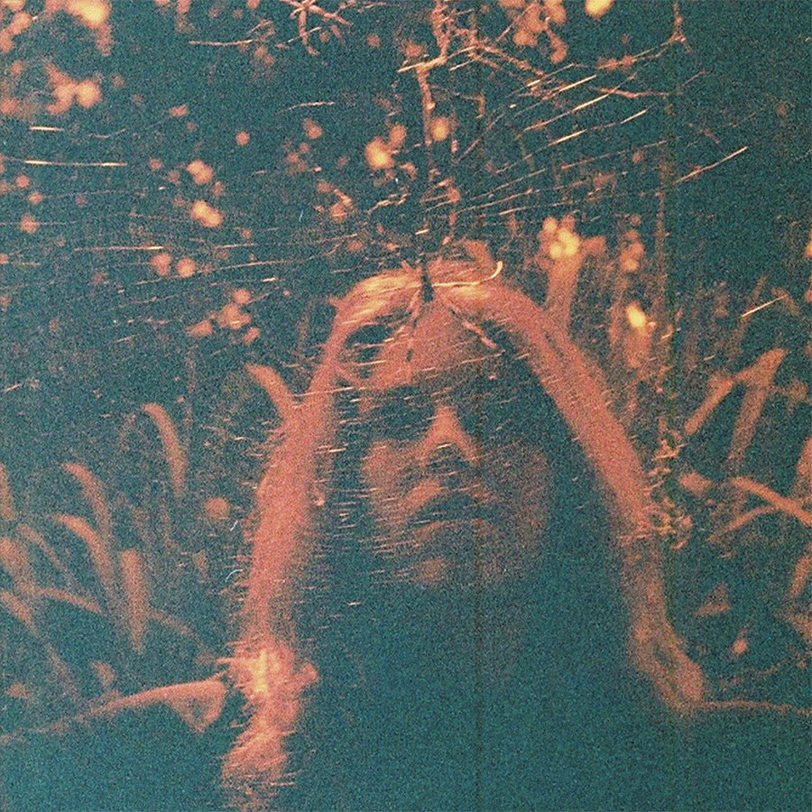
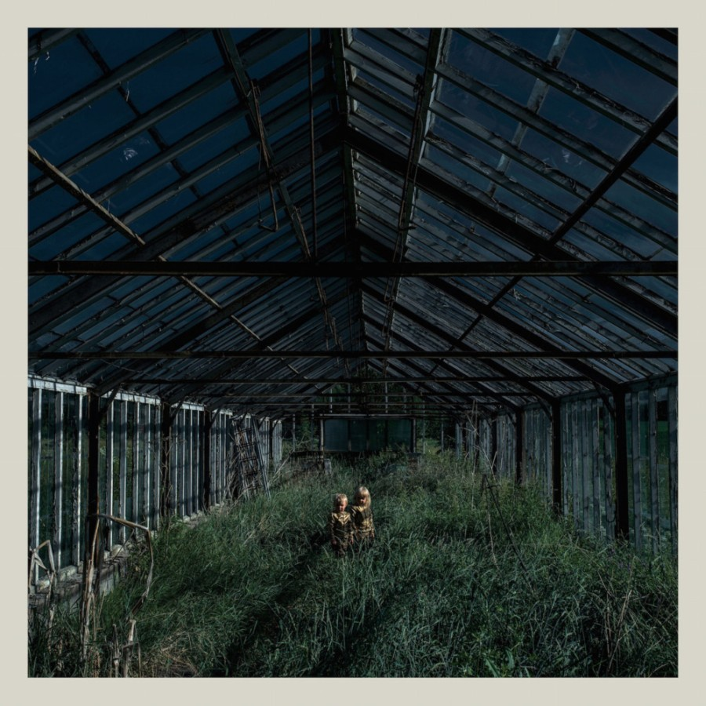
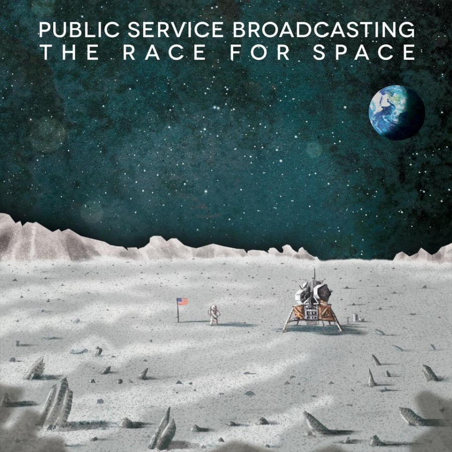
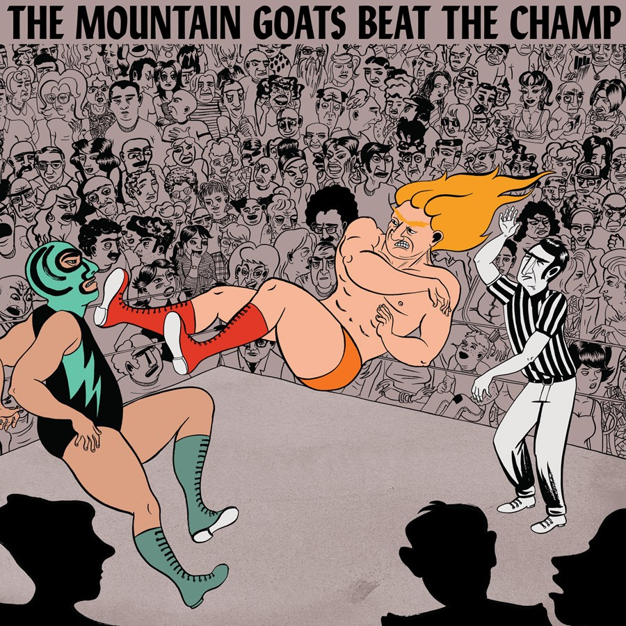
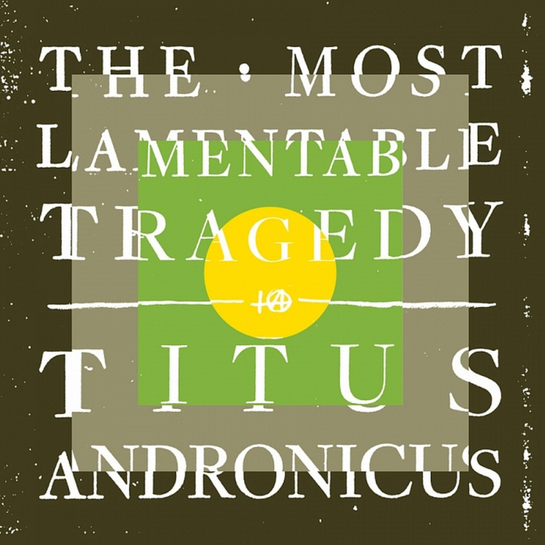
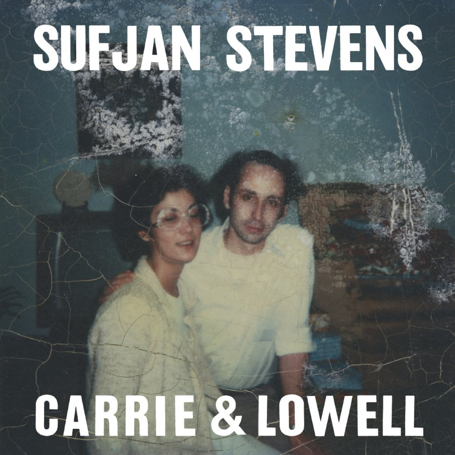

Albums of 2015
10
On Grimes' 2012 album Visions, standout tracks like “Genesis” and “Oblivion” amply demonstrated Canadian born Claire Boucher's
talent for catchy synth-pop with more than its fair share of idiosyncrasies. Follow-up Art Angels is, for the most part, a much
more accessible pop record than previous albums, but simultaneously a pop album that only Grimes could produce - proof that pop
need not remain free of complexity and thought to be catchy and fun.

9
Lone Wolf is the alias of Leeds-based Paul Marshall who makes soulful and wistful "art-pop". On recording Lodge, Marshall
locked himself away for six days in a soon to be disbanded studio (called 'The Lodge', hence the title), a small converted barn
in the middle of nowhere - somewhere where Marshall felt the ability to lift the veil of his increasing anxiety. The result
is a stripped-back, beautiful and soulful piano-dominated record which very much wears its heart on its sleeve.

8
Steve Hauschildt
Where All is Fled
Where All is Fled is the first solo album from Steve Hauschildt in three years. Formerly a member of experimental
electronic trio Emeralds, Hauschildt masterfully crafts a sublime cosmic journey through a limitless, abstract universe
using emotive ambient melodies and sweeping arpeggios.

7
Dilate finds Vessels, formerly a band placed firmly in the 'post-rock' genre bracket, making a distinct shift in sound
to more club-orientated, electronic pastures, oozing influence from the likes of Nathan Fake, James Holden and Modeselektor.
In place of swelling guitar crescendos are swirling and twisting electronic textures, rich in melody, atmosphere and
complexity - not to mention danceability (that's totally a word).

6
Turnover
Peripheral Vision
Virginia Beach's Turnover's first album, Magnolia, was a fairly straightforward pop-punk affair. With this
follow-up, Turnover have refined their song-writing, becoming more wistful, heartfelt and reflective,
showing signs of emo influence from the likes of American Football and Moving Mountains, as well as indie outfits like Wild
Nothing and Real Estate. On the whole, Peripheral Vision is a tender reflection of angst-filled college days,
taking stock of the personal struggles and complexities of growing up.

5
Dealer was my first encounter with Missouri band Foxing. Having checked out their debut album since then, it feels like, similar to the
Turnover album above, Foxing have taken a giant step in the maturity of their song-writing with their second album. Dealer is a raw, atmospheric and emotive record, merging
both elements of emo-style songwriting (think Brand New) and shimmering post-rock textures and crescendos (think Explosions in the Sky) to form a complex, intense
and evocative record.

4
Public Service Broadcasting
The Race for Space
London duo Public Service Broadcasting have a good knack for combining electronic pop sensibilities with
samples from public information movies and radio broadcasts. The Race for Space, as the name suggests,
is themed around the American / Soviet space race, using samples from the British Film Institute to tell
both the success and horror stories from both sides of the race. Sample-driven music can quite often become
tiresome, but the variety of the instrumentals on offer provide an ever-changing thrilling journey: from the
minimal techno pulses of "Sputnik", to the hip-shaking funk of "Gagarin", to the goosebump inducing
triumph of regaining contact in "The Other Side". I had the privilege of seeing J Willgoose from the
band present a lecture on the making of the album during Belfast Science Week, which only served to reinforce how
meticulously the audio archives available were perused and woven with the instrumentation. It's an album
which excites and inspires, highlighting mankind's many challenges and accomplishments in exploring the unknown,
something which deserves to be celebrated and continued into the far reaches of the Universe.

3
The Mountain Goats
Beat the Champ
As a kid, I have many memories of excitedly jumping around the living room while watching WWF wrestling (now WWE), a passion
which died out as I got older, but which I still look back on fondly. So, when I heard one of my favourite bands, The Mountain
Goats, were writing an album based around professional wrestling due to frontman John Darnielle's same childhood passion (albeit
with a much less glamorous and commercial form of wrestling), I was incredibly excited. Beat the Champ provides
a compelling exploration of the psyche of pro wrestlers with a surprising humanising depth that many of us would rarely consider when
it comes to a sport that is often viewed as nothing more than inane and crass entertainment. At times, we also hear of Darnielle's own
childhood love of wrestling and how his heroes were always a hope for him against his abusive step-father ("You let me down
but Chavo never once did / You called him names to try to get beneath my skin / Now your ashes are scattered on the wind").
The dynamics of the album also vary widely, from the bold and brassy horns of "Foreign Object" to the brooding ethereal piano
epilogue of "Heel Turn 2". With Beat the Champ, John Darnielle continues to prove his ability to craft characters
and tell poetic stories through his songs.

2
Titus Andronicus
The Most Lamentable Tragedy
Titus Andronicus last featured on my end of year album list back in 2010 with The Monitor, a boisterous anthemic punk album
built around the American Civil War, which back then I charted at number 6. It's fair to say my love for that album only grew over time
and in retrospect, the album would be placed much higher in the list. Two albums later and Titus Andronicus have returned with a
93-minute rock opera which, over the course of 30 tracks and five 'acts', details the trials and tribulations of an unnamed characters
wrestling with manic depression, as well as attempting the courtship of a woman named Siobhan, which reaches its climax at the toll of midnight
on New Years Eve. The result is an album which is, for the most part, cranked up to 11 in almost every aspect, at many points echoing the likes of
The Clash, Springsteen and hell, even Meat Loaf (but in the best way, trust me). It's thrashing, brutal, insane, anthemic, cathartic and, on a musical level,
just a shit-load of fun. Titus Andronicus forever!

1
Sufjan Stevens
Carrie & Lowell
Every now and then an album comes along which is as devastating as it is beautiful, which has the ability to shift your views on life and death,
and change your endeavours as a human being. The last album I remember having this impact on me was The Antlers' Hospice, which I placed
at #1 back in 2009. Six years later, Carrie & Lowell by Michigan-born singer-songwriter and multi-instrumentalist Sufjan Stevens is
delivering the same emotional impact for me.
The album is titled after Stevens' mother and stepfather. In 2012, Stevens lost his mother to cancer.
She had suffered from drug addiction, as well as being bipolar and schizophrenic, and had abandoned her children on a number of occasions,
to the point of being estranged from Stevens throughout much of his adult life. On Carrie & Lowell, many of the songs find Stevens
struggling with the aftermath of this estrangement and attempting to find a sense of connection and forgiveness with his mother after death ("I forgive
you mother / I can hear you and I long to be near you / but every road leads to an end"). Stevens considers how a final conversation between him and his
mother after her death would play out in the devastating Fourth of July ("Did you get enough love, my little dove / Why do you cry? /
I’m sorry I left, but it was for the best / Though it never felt right"). It's a crushing listen every single time.
There are moments of regret ("I should have wrote a letter explaining what I feel, that empty feeling."), alcohol abuse ("Now I'm drunk and afraid,
and wishing the world would go away / what's the point of singing songs, if they'll never even hear you?"), struggles of depression and
suicidal thoughts ("Do I care if I survive this?"), but also moments of beauty and hope within hopelessness ("The only reason why I continue at all
/ Faith in reason, I wasted my life playing down / Signs and wonders: sea lion caves in the dark / Blind faith, God’s grace, nothing else left to impart"; "My brother had
a daughter / the beauty that she brings, illumination").
Musically, the album is very much a return to Stevens' stripped-back folk roots, foregoing the over-the-top chaos of Age of Adz and Illinois for what
on the surface seems like more straightforward simplicity; however, there is plenty of complexity hidden in the production, a fine example being the ominous bass
which rumbles intermittently throughout "Fourth of July". The melodies on offer are nothing short of beautiful as well, from the shimmering finger-picking of
Death with Dignity and The Only Thing, to the tear-jerking fading pulses of John My Beloved.
Carrie & Lowell is a deeply personal record, full of loss, heartbreak and sorrow, but with lessons of love and hope scattered amongst the wreckage.
It's an album that made me love a little more openly and made me appreciate those who close to me more. The best art makes us feel something, but
masterpieces have the power to change us.

Honourable Mentions
Albums which didn't quite make the cut, but which needed a mention: